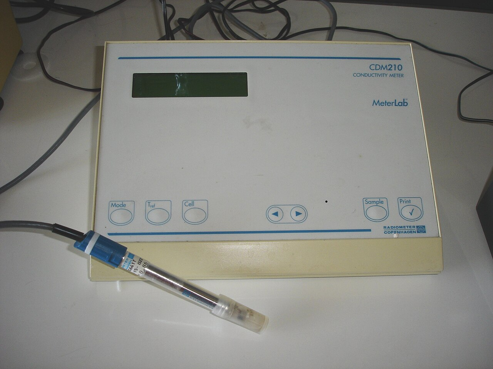
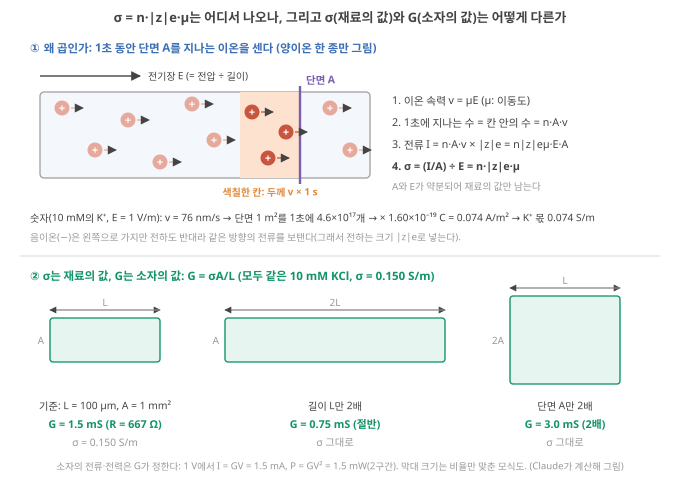
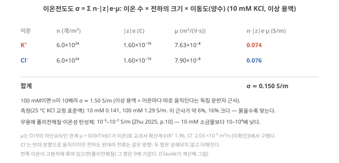
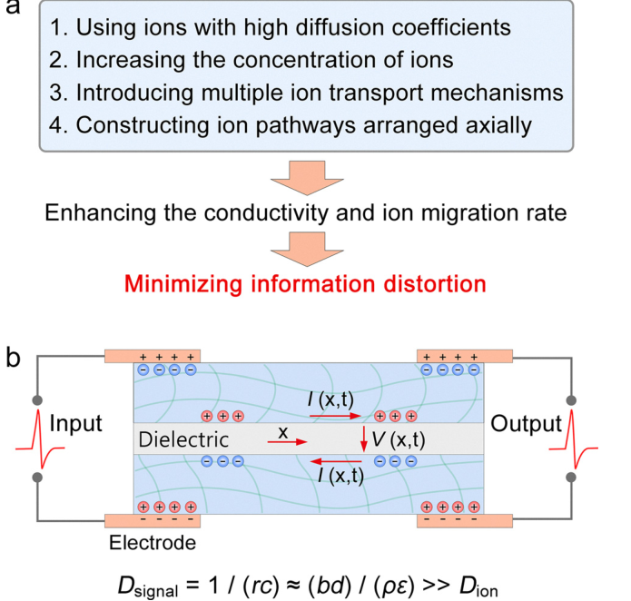
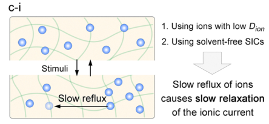
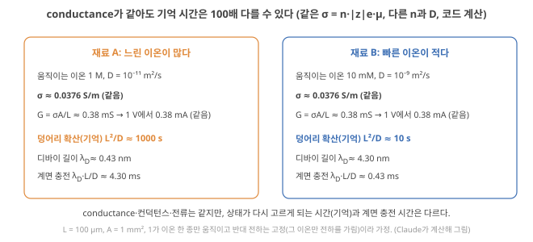

Day 43. 이온전도도는 무엇을 세나, conductance가 정하는 것과 정하지 못하는 것, 같은 conductance 다른 기억
Phase 4 · 왜 이온성 고분자인가
이번 질문 이온전도도 σ = Σn|z|eµ는 정확히 무엇의 곱이고, device의 무엇(전류·전력·계면 충전)은 정하며 무엇(기억 시간·비선형·상태 다양성)은 정하지 못하나? conductance가 같은 두 재료가 기억 시간에서 100배 다를 수 있나?
왜 배우나 conductance는 읽기 전류·전력만 정하고 기억 시간·비선형은 못 정한다.
오늘의 장면 n, z, μ, L·A → 단면 통과 이온 × 전하 → σ = Σ n|z|eμ → G = σA/L [S]
오늘 반드시 σ는 n·z·μ의 곱이라 n과 D를 구분하지 못한다. 같은 σ에서도 기억은 1000 s 대 10 s로 달라질 수 있다.
나중에 봐도 됨 폴리전해질 반대이온 항 · 10 mM KCl 이상값과 측정값 차이
넘어가는 기준 '오늘 반드시'를 내 말로 말할 수 있으면 충분합니다.
이후 쓰이는 곳 Day 45–46 단일 이온 전도체 σ·λ_D · Day 53–56 n과 D 따로 재는 실험
지난 학습 복습
지난 학습 단위(Day 42 · 가교·염 농도, 논문의 교란변수, 화학 → τ → 계산 지표의 경로)의 핵심을 다른 예로 확인합니다. 고르는 즉시 맞았는지와 이유가 보입니다. 틀려도 아래 학습자료는 그대로 열려 있고, 틀린 문제에는 다시 볼 곳이 붙습니다.
사전 테스트 (선택)
사전 테스트 펼치기 · 배우기 전에 짐작해 보는 문제 (선택)
학습자료
고분자 이온 소재를 연구하는 사람이 가장 먼저 재는 숫자는 보통 이온전도도입니다. 지난 학습(Day 41–42)의 끝에서는 이온 함량을 늘렸더니 메모리 창(memory window)은 그대로이고 전력만 늘었던 device를 보았습니다. 그래서 자연스러운 질문이 나옵니다. "이온전도도가 높으면 뉴로모픽 성능도 좋아지나?" 답을 미리 말하면, "그 질문은 너무 거칠다"입니다. Conductance는 device의 어떤 성질은 정하고 어떤 성질은 정하지 못하며, 기억이 필요한 계산에서는 오히려 너무 높으면 나빠지는 경우도 있습니다. 그래서 이번 끝에서는 질문 자체를 바꿉니다. "분자구조로 이온 동역학을 어떻게 제어해야 특정 계산 기능이 좋아지나?"
이 주제의 질문 순서 — 이번 Day 43에서는 구간 1–3만 읽습니다. 나머지는 Day 44에서 이어집니다(구간 번호는 원래 한 묶음이던 순서 그대로입니다).
- 이온전도도 \(\sigma = \sum n\,|z|e\,\mu\)는 정확히 무엇을 세는 숫자인가? (작은 숫자로) → 구간 1
- Conductance는 이온 device의 무엇을 정하고, 무엇을 정하지 못하나? → 구간 2
- Conductance가 같은 두 재료가 전혀 다른 기억을 가질 수 있나? → 구간 3
- 기억이 필요한 과제에서 conductance는 "높을수록 좋은가", 아니면 최적점이 있나? (Day 44에서)
- 그래서 질문을 어떻게 바꿔야 고분자 설계가 계산 기능으로 이어지나? (Day 44에서)
1. 이온전도도는 무엇을 세는가: σ = Σ n·|z|e·µ
이 구간을 읽고 나면 이온전도도가 왜 "움직이는 이온의 수 × 전하 × 이동도"의 곱인지 '1초에 단면을 지나는 이온 세기'로 설명하고, 재료의 conductance σ [S/m]와 device의 컨덕턴스 G [S]를 구분하며, 10 mM 소금물의 conductance를 손으로 계산하며, 폴리전해질(polyelectrolyte)처럼 한쪽 이온이 묶인 재료에서 그 식이 어떻게 바뀌는지 말할 수 있다.
상황. 새 고분자 전해질의 이온전도도를 임피던스로 재서 \(\sigma\) = 0.04 S/m를 얻었다고 합시다. 이 숫자가 정확히 무엇을 센 것인지(이온 수 × 전하 × 이동도), device 하나의 컨덕턴스로는 어떻게 바뀌는지 알아야 다음 질문, 곧 "그래서 기억·전력은?"을 던질 수 있습니다.
이온전도도 σ = Σ n·|z|e·µ 와 계산 기능의 관계
① 왜 필요한가. 논문의 표에는 "이온전도도 \(x\) S/m"가 거의 늘 있습니다. 이 숫자가 무엇의 곱인지 알아야, 그것이 계산 기능의 어디에 닿는지(또는 닿지 않는지) 말할 수 있습니다.
② 무엇인가: 재는 법과 뜻. 단면적 \(A\) [m²], 길이 \(L\) [m]인 재료 막대의 양 끝에 전압을 걸어 저항 \(R\) [Ω]을 재면, conductance는 \(\sigma = L/(RA)\)이고 단위는 S/m(지멘스/미터, 1 S = 1/Ω)입니다. 숫자 예: \(L\) = 100 µm, \(A\) = 1 mm²인 막대의 저항을 재 보니 667 Ω이었다면 \(\sigma = 10^{-4} \div (667 \times 10^{-6}) \approx 0.150\) S/m입니다(아래 "작은 숫자로: 10 mM KCl"에서 계산할 값). Conductance가 크면 같은 모양·같은 전압에서 전류가 많이 흐릅니다.

그림 1을 읽기 전에: 기호 다섯 개. 그림 1과 아래 계산에 나오는 기호를 먼저 정합니다. 정확한 조건은 그림 뒤에서 덧붙입니다. 그림 1·2의 숫자는 모두 이상 용액(ideal solution) 계산입니다. 이온 하나하나가 다른 이온과 상관없이 따로 움직인다(독립 운반자, independent carriers)고 보는 묽은 용액의 근사이고, 이 근사가 맞는 범위는 아래 10 mM KCl 계산의 단계 4에서 측정과 견줍니다.
- \(E\): 전기장 [V/m]. 막대에 걸린 전압 ÷ 막대 길이로, 이온을 끌어당기는 세기입니다.
- \(n\): 단위 부피(1 m³)에 든 움직일 수 있는 이온의 수 [개/m³].
- \(|z|e\): 이온 하나가 나르는 전하의 크기 [C]. 1가 이온이면 \(e = 1.6\times10^{-19}\) C.
- \(\mu\): 이동도 [m²/(V·s)]. 전기장 1 V/m에서 이온이 끌려가는 속력입니다. 그래서 전기장 \(E\)에서의 속력은 \(v = \mu E\) [m/s].
- \(A\), \(L\): 막대의 단면적 [m²]과 길이 [m].

왜 '수 × 전하 × 이동도'의 곱인가(그림 1(a)). 전류는 1초에 단면을 지나는 전하의 양이고, 그 전하를 나르는 것은 이온입니다. 이온 한 종류만 두고 순서대로 셉니다.
- 전기장 \(E\) [V/m] (걸린 전압 ÷ 길이)를 받은 이온은 일정한 속력 \(v = \mu E\)로 끌려갑니다. \(\mu\)가 위에서 정한 이동도입니다.
- 1초 동안 단면 \(A\)를 지나는 이온은, 단면 바로 앞 두께 \(v \times 1\) s 칸 안에 있던 이온들입니다. 그 칸의 부피는 \(A v\), 이온 수는 \(n A v\).
- 이온 하나가 \(|z|e\)의 전하를 나르므로 전류 \(I = n A v \times |z|e = n|z|e\mu\,E A\).
- 단면 1 m²당 전류(\(I/A\), 전류 밀도(current density))를 전기장으로 나누면 모양과 전압이 약분되고 재료의 값만 남습니다: \(\sigma = (I/A)/E = n|z|e\mu\).
숫자 예(10 mM의 K⁺, \(E\) = 1 V/m): \(v = 7.6\times10^{-8}\) m/s(1초에 76 nm). 단면 1 m²를 1초에 지나는 K⁺는 \(6.0\times10^{24} \times 7.6\times10^{-8} = 4.6\times10^{17}\)개, 전하로 바꾸면 \(\times 1.6\times10^{-19}\) C = 0.074 A/m²이고, 이것을 1 V/m로 나눈 0.074 S/m가 아래 10 mM KCl 계산 단계 3의 K⁺ 항입니다.
용어 약속: σ와 G(그림 1(b)). 우리말로 둘 다 'conductance'라 부르는 일이 많아 섞이기 쉽습니다. Day 1–2·Day 7–8의 crossbar에서 weight로 쓴 \(G\)는 device 하나 전체의 컨덕턴스(conductance) \(G = 1/R\) [S]이고, 여기의 \(\sigma\)는 모양과 상관없는 재료의 성질인 conductance(conductivity) [S/m]입니다. 위 식을 뒤집으면 둘의 관계가 나옵니다.
\[ G = \frac{\sigma A}{L} \]
같은 재료(σ 그대로)라도 막대를 두 배 길게 하면 \(G\)는 절반, 단면을 두 배로 하면 \(G\)는 두 배입니다(그림 1(b)). 위 막대는 \(G = 0.150 \times 10^{-6} \div 10^{-4} = 1.5\times10^{-3}\) S = 1.5 mS. 이 날 본문에서 'conductance'는 늘 재료의 σ [S/m]이고, device의 값은 '컨덕턴스 G [S]'로 구분해 씁니다. device의 전류·전력은 \(G\)가 정하고(아래 '정하는 것과 정하지 못하는 것' 표), σ는 크기 \(L\), \(A\)와 함께 \(G\)에 들어갑니다.
식에 들어가는 세 양. 위의 기호 정의에 조건을 덧붙입니다.
- \(n\): 단위 부피당 움직일 수 있는 이온의 수 [개/m³]. 이온쌍(ion pair)으로 묶여 있거나 고분자에 고정된 이온은 세지 않습니다(이온쌍과 해리).
- \(|z|e\): 이온 하나의 전하의 크기 [C]. \(z\)는 이온의 가수(K⁺는 +1, Cl⁻는 −1, Ca²⁺는 +2), \(e = 1.6\times10^{-19}\) C. 1가 이온이면 양이온이든 음이온이든 \(1.6\times10^{-19}\) C이고, 부호는 넣지 않습니다.
- \(\mu\): 이동도 [m²/(V·s)], 전기장 1 V/m에서 이온이 끌려가는 속력(크기, 늘 양수)(이동도·확산계수와 자릿수 비교). ★ 물성표에는 보통 이동도 대신 확산계수 \(D\) [m²/s] (이온이 열운동으로 퍼지는 빠르기)가 실려 있어, Day 35–36의 아인슈타인 관계 \(\mu = |z|e\,D/(k_BT)\)로 바꿉니다(\(k_B\) 볼츠만 상수, \(T\) 절대온도. 뒤에서 '몇 개 전 입력'을 세는 \(k\)와 섞이지 않게 볼츠만 상수를 \(k_B\)로 씁니다). 1가 이온이면 \(\mu = D/(k_BT/e)\)이고, 25 °C에서 \(k_BT/e\) = 25.7 mV(열전압)입니다.
\[ \sigma = \sum_i n_i\, |z_i| e\, \mu_i \qquad (\mu_i > 0) \]
- 왜 지금 필요한가: conductance 하나의 숫자를 "몇 개가", "얼마나 빨리"로 나눠 보기 위해.
- 기호: \(\sum_i\)는 움직이는 이온 종류마다(양이온, 음이온 …) 더하라는 뜻.
- 단위: (개/m³) × C × m²/(V·s) = C/(V·m·s) = S/m.
- 왜 절댓값인가: 전기장을 걸면 양이온은 전기장 방향으로, 음이온은 반대 방향으로 움직입니다. 그런데 음이온은 전하도 음수라서, "음전하가 왼쪽으로 가는 것"은 "양전하가 오른쪽으로 가는 것"과 같은 방향의 전류입니다. 그래서 두 이온의 기여는 상쇄되지 않고 더해집니다. 전하를 부호째(\(q = -e\)) 넣고 싶다면 이동도도 "속도 ÷ 전기장"의 부호 있는 값(음이온은 음수)으로 써야 곱 \(q\mu\)가 양수가 됩니다. 이 교재는 \(|z|e\)와 양수 \(\mu\)로 통일합니다.
- 계산 순서: 이온 종류마다 \(n \times |z|e \times \mu\)를 구해 모두 더한다(모든 항이 0 이상).
- 결과의 뜻: conductance는 \(n\)과 \(\mu\)의 곱만 본다. 많지만 느린 이온과, 적지만 빠른 이온이 같은 conductance를 낼 수 있다(아래 "같은 conductance, 다른 기억").
③ 작은 숫자로: 10 mM KCl.
단계 1 — 개수. 10 mM = 0.01 mol/L = 10 mol/m³. 이온 수는 \(10 \times 6.02\times10^{23} = 6.0\times10^{24}\) 개/m³. K⁺도 Cl⁻도 이만큼 있습니다.
단계 2 — 이동도. 물성표의 확산계수(25 °C 무한 희석(infinite dilution: 이온끼리 영향이 없을 만큼 묽은 극한), K⁺ \(1.96\times10^{-9}\), Cl⁻ \(2.03\times10^{-9}\) m²/s Vanýsek 2018 (CRC))를 위의 아인슈타인 관계 \(\mu = D/(k_BT/e)\)로 바꾸면(25 °C, 1가 이온이라 \(k_BT/e\) = 0.0257 V) \(\mu_{K} = 1.96\times10^{-9} \div 0.0257 = 7.6\times10^{-8}\), \(\mu_{Cl} = 7.9\times10^{-8}\) m²/(V·s).
단계 3 — 곱하고 더하기. K⁺: \(6.0\times10^{24} \times 1.6\times10^{-19} \times 7.6\times10^{-8} \approx 0.074\) S/m. Cl⁻도 \(|z| = 1\)이라 같은 \(1.6\times10^{-19}\) C를 곱해 약 0.076 S/m(음이온이라고 빼지 않습니다). 합계 \(\sigma \approx\) 0.150 S/m. Day 37–38에서 EDL 충전 시간을 계산할 때 쓴 바로 그 값입니다.
단계 4 — 진하게, 그리고 이 계산이 맞는 범위. 100 mM이면 \(n\)이 10배라 1.50 S/m(이상 용액). 위 계산은 이온이 서로 상관없이 따로 움직이고(독립 운반자), 그 이동도가 아주 묽은 용액의 값 그대로라고 가정합니다. 실제 측정과 비교하면 이 가정이 맞는 범위가 보입니다. Conductance계 교정에 쓰는 KCl 표준액(calibration standard)의 25 °C 값은 10 mM이 1413 µS/cm = 0.141 S/m, 100 mM이 12.88 mS/cm = 1.29 S/m입니다(25 °C 교정 표준액의 공칭값 확인 제조사 표준액 정보). 이상 용액 계산은 10 mM에서 약 6%, 100 mM에서 약 16% 크게 나옵니다. 진할수록 이온끼리 끌어당기고 짝을 지어 \(n\)과 \(\mu\)가 실제로는 줄기 때문입니다. 그러니 이 식으로 낸 숫자는 10 mM 안팎까지의 묽은 용액에서 몇 % 안의 어림이고, 더 진한 용액이나 고분자 겔·이온액체처럼 이온이 서로 엮여 움직이는 계에서는 \(n\)과 \(\mu\)를 따로 재거나 측정 conductance를 써야 합니다. 해석
계산 결과를 한 장에 모으면 그림 2입니다.

④ 폴리전해질에서는. 고분자에 음전하가 붙은 polyanion 겔이나 고체를 생각합니다. 음전하는 사슬에 묶여 있으니 그 항은 0에 가깝고, conductance는 반대이온(양이온) 한 종류의 \(n|z|e\mu\)뿐입니다. 이렇게 한 종류의 이온만 움직이는 전도체를 단일 이온 전도체(single-ion conductor)라 부르며, Day 45–46의 주제입니다. 숫자 예로 움직이는 양이온이 0.5 M, 확산계수가 \(10^{-12}\) m²/s라면 \(\sigma \approx 1.9\times10^{-3}\) S/m입니다(코드 계산). Zhu 리뷰가 정리한 폴리전해질·무용매 이온성 탄성체의 범위(\(10^{-5}\)–\(10^{-2}\) S/m) 안입니다. Zhu 2025, p.10
⑤ 이름과 정확한 뜻. 이온전도도 = 단위 길이·단위 면적의 재료가 전류를 흘리는 정도 = 움직이는 이온의 (수 × 전하 × 이동도)의 합. 넌스트–아인슈타인 관계(Nernst–Einstein relation; \(\mu = |z|e D/(k_BT)\)를 넣은 꼴)로 \(\sigma = \sum n z^2 e^2 D/(k_BT)\)라고도 씁니다(묽은 계·열평형·독립 운반자 조건; \(z^2\)이라 부호가 저절로 사라집니다). 1가 이온 한 종만 움직이면 \(\sigma = n e\,D/(k_BT/e)\), 곧 conductance는 \(n\)과 \(D\)의 곱에 비례합니다. 아래 '같은 conductance, 다른 기억'에서 이 꼴을 씁니다.
⑥ 계산 기능과의 연결(이 날의 요지). Day 39–40에서 본 대로 상태가 다시 고르게 되는 시간(기억)은 \(L^2/D\)로 앞의 곱 \(n\cdot|z|e\cdot\mu\) 가운데 \(D\)(이동도)만 보고, 비선형은 접합의 비대칭과 선택성이, 상태의 다양성은 독립된 시간상수의 수가 정합니다. 그래서 conductance 하나로 계산 기능을 말할 수 없습니다. 이것을 아래에서 하나씩 보입니다.
⑦ 짧은 확인. 이온쌍이 많이 생겨 \(n\)이 절반이 되고 \(\mu\)는 그대로라면 conductance는? (답: 절반.)
아래 점검의 셋째 문항은 위 폴리전해질 예와 다른 숫자의 폴리전해질입니다(움직이는 양이온 0.1 M, 확산계수 \(10^{-11}\) m²/s). 계산하기 전에, 10 mM KCl(0.150 S/m)이나 위 폴리전해질 예(\(1.9\times10^{-3}\) S/m)와 비교해 자릿수를 먼저 어림해 보세요(풀이 예시 → 일부 채우기 → 혼자 풀기).
- \(\sigma = \sum n|z|e\mu\): 움직이는 이온의 수 × 전하의 크기 × 이동도(양수)의 합. 1초에 단면을 지나는 이온 수(\(nAv\), \(v = \mu E\))에서 나온다.
- σ [S/m]는 재료의 값, device의 컨덕턴스는 \(G = \sigma A/L\) [S]. 같은 재료라도 길이 2배면 \(G\) 절반(10 mM KCl, 100 µm × 1 mm²: 1.5 mS). 음이온도 더해진다. 10 mM KCl ≈ 0.150 S/m(이상 용액, 코드 계산), 측정값 0.141 S/m(25 °C 교정 표준액). 독립 운반자 근사라 진할수록 크게 나온다(100 mM에서 약 16%).
- \(n\)은 '움직일 수 있는' 이온만 센다(이온쌍·고정 이온 제외). 폴리전해질은 반대이온 한 항만 남는다(단일 이온 전도체, Day 45–46).
- Conductance는 \(n\)과 \(D\)의 곱만 본다. 기억·비선형·상태 다양성은 다른 양이 정한다.
2. Conductance가 정하는 것과 정하지 못하는 것
이 구간을 읽고 나면 conductance가 컨덕턴스 \(G = \sigma A/L\)을 거쳐 정하는 device 성질(전류 크기, 소모 전력(power consumption), 신호 전달 속도, 그리고 농도와 함께 계면 충전)과 정하지 못하는 성질(기억 시간, 비선형, 상태 다양성, 재현성)을 표로 나누고, 한 리뷰(Wang 2025)가 '전달'과 '기억'에 반대 방향의 설계를 권하는 이유를 말할 수 있다.
conductance σ는 device의 모양(\(L\), \(A\))과 함께 컨덕턴스 \(G = \sigma A/L\)(= \(1/R\), 용어 약속: σ와 G)을 정합니다. \(G\)가 정하는 것을 먼저 적고, 그다음 정하지 못하는 것을 적습니다. 숫자 예는 앞의 막대(10 mM KCl, σ = 0.150 S/m, \(L\) = 100 µm, \(A\) = 1 mm², \(G\) = 1.5 mS)입니다.
표의 아래 네 줄에 쓰인 양은 앞 Day에서 배웠습니다. 상태가 다시 고르게 되는 시간 \(L^2/D\)(확산 시간), 정류·문턱 같은 비선형을 만드는 접합의 비대칭과 이온 선택성(농도 분극), 서로 다른 시간상수를 가진 상태가 몇 개인가(상태의 다양성, Kernel quality, generalization rank, state diversity), 그리고 시간이 지나며 값이 흘러가는 drift(편차)입니다.
| Device 성질 | Conductance와의 관계 | 근거·식 |
|---|---|---|
| 읽기 전류(read current, 신호 크기) | 비례: 같은 전압·크기에서 \(I = GV = \sigma A V / L\). 예: 1 V에서 1.5 mA, σ가 2배면 3.0 mA | Ohm 법칙 |
| 소모 전력 | 비례: \(P = IV = GV^2 = \sigma A V^2/L\). 예: 1 V에서 1.5 mW | 같은 전압이면 conductance 2배 → 전력 2배 |
| 계면(EDL) 충전 시간 | 농도가 같을 때만 반비례: \(\tau_c = RC = \varepsilon L/(\sigma\lambda_D)\)(아래). 예: 0.15 ms. 같은 σ라도 농도(\(\lambda_D\))가 다르면 달라진다(아래 '같은 conductance, 다른 기억') | EDL 충전 시간 τ ~ λ_D·L/D |
| 전기 신호의 전달 | 높을수록 빠르고 덜 줄어듦 | Ionic cable(Day 35–36) |
| 기억 시간(상태가 다시 고르게 되는 시간) | 직접 정하지 않음: \(L^2/D\), 결합·반응 | Day 39–40, Day 41–42 |
| 비선형(정류·문턱) | 정하지 않음: 선택성·비대칭·접합 | Day 37–38 |
| 상태의 다양성(독립 모드) | 정하지 않음: 서로 다른 시간상수의 수 | Day 25–26, Day 41–42 |
| 재현성·drift | 정하지 않음: 봉지·용매·반응 | Day 33–34 |
계면 충전 줄 풀어 보기. Day 39–40에서 계면 충전 시간은 덩어리 저항 × 계면 capacitance이었습니다. 면적 1 m²당 저항은 \(L/\sigma\) [Ω·m²], 계면 capacitance는 판 간격이 디바이 길이 \(\lambda_D\)인 축전기 \(\varepsilon/\lambda_D\) [F/m²]입니다(\(\lambda_D\)의 아래 첨자 D는 디바이(Debye)의 머리글자로, 확산계수 \(D\)와 다른 기호입니다)(\(\varepsilon = \varepsilon_r\varepsilon_0\), 물이면 \(\varepsilon_r\) = 78.5, 디바이 길이 λ_D). 곱하면 \(\tau_c = \varepsilon L/(\sigma\lambda_D)\) [s]. 숫자: \(6.95\times10^{-10} \times 10^{-4} \div (0.150 \times 3.04\times10^{-9}) \approx\) 0.15 ms. σ가 분모에 있지만 \(\lambda_D\)도 분모에 있습니다. 염을 더 넣어 σ를 올리면 \(\lambda_D\)가 얇아져 capacitance가 커지므로 두 효과가 일부 상쇄되고, 그래서 \(\tau_c\)는 σ 하나로 정해지지 않습니다. 양·음이온의 \(D\)가 같은 1:1 염이면 Day 39–40의 \(\sigma = \varepsilon D/\lambda_D^2\)를 넣어 \(\tau_c = \lambda_D L/D\)가 됩니다.
전류·전력 줄의 조건. 표의 전류는 덩어리를 지나는 이온 전류입니다. 이온이 전극을 실제로 드나들 수 있거나(전극 반응, 이온 교환), 읽는 시간이 \(\tau_c\)보다 짧을 때(짧은 펄스, 교류 측정) 그대로 성립합니다. 이온을 막는 전극에 직류를 계속 걸면 계면이 \(\tau_c\) 안에 채워지고 전류는 0으로 줄어듭니다(Day 39–40의 R–C circuit, 저항–capacitor 회로). 이때 한 번 충전하며 저항에서 잃는 에너지는 \(\tfrac{1}{2}CV^2\)로 \(R\)과 무관하다는 것이 R–C circuit의 결과라, 'conductance 2배 → 전력 2배'는 계속 흐르는 전류나 \(\tau_c\)보다 짧은 읽기에 대한 말입니다. 해석
전달과 기억은 반대 방향을 원한다. Wang 2025는 연성 이온 전도체(soft ionic conductor)로 신호를 멀리 보내는 인공 축삭(artificial axon)을 만들 때는 conductance와 이온 이동도를 높이는 방법들을 정리합니다(원문 Fig. 4a). Wang 2025 (Chem. Soc. Rev.), p.307 같은 리뷰는 보통의 연성 이온 센서(변형·압전·열전 센서)가 자극을 끄면 신호가 빠르게 사라져 기억이 없다고 지적하고 Wang 2025 (Chem. Soc. Rev.), p.307, 기억(이완)이 있는 이온 전류를 만들려면 "이온 종의 이동 속도를 줄이는 것이 핵심"이라고 씁니다. Wang 2025 (Chem. Soc. Rev.), p.308 같은 재료 계열 안에서도 기능에 따라 conductance의 바람직한 방향이 반대입니다.
원문 그림 읽는 법(아래 Wang 2025 Fig. 4와 Fig. 5c-i): 같은 리뷰의 두 그림을 위아래로 놓았습니다. 위는 신호를 보내는 device(인공 축삭)의 처방, 아래는 기억하는 device의 처방입니다. 두 그림의 첫 줄(확산계수가 큰 이온 대 작은 이온)을 나란히 읽으면, 같은 연구 분야 안에서 이온 이동 속도의 바람직한 방향이 기능에 따라 뒤집히는 것이 보입니다.


에너지 쪽에서 본 반례. Day 41–42에서 본 Zheng 2025의 이온탄성체(ionoelastomer) device는 TFSI⁻ 함량을 4.97%에서 7.55%로 늘렸을 때 메모리 창은 비슷했고, 저자들은 높은 함량이 성능 이득 없이 전력 소모만 늘렸다고 씁니다. Zheng 2025, p.6 conductance를 올리는 손잡이(이온 함량)가 기억은 늘리지 않고 위 표의 '소모 전력' 줄만 움직인 예입니다. 해석
- Conductance가 컨덕턴스 \(G = \sigma A/L\)을 거쳐 정하는 것: 읽기 전류(\(GV\)), 소모 전력(\(GV^2\)), 신호 전달 속도. 계면 충전 \(\tau_c = \varepsilon L/(\sigma\lambda_D)\)는 농도(\(\lambda_D\))도 함께 본다.
- 정하지 않는 것: 기억 시간(\(L^2/D\), 결합·반응), 비선형(선택성·비대칭), 상태 다양성, 재현성.
- 전달은 높은 conductance를, 기억은 느린 이온 이동을 원한다 Wang 2025 (Chem. Soc. Rev.), p.307–308. 이온 함량을 늘려도 전력만 늘 수 있다 Zheng 2025, p.6.
3. 같은 conductance, 다른 기억
이 구간을 읽고 나면 conductance가 같은 두 재료가 기억 시간에서 100배 다를 수 있음을 계산으로 보이고, 그 차이를 가리려면 conductance 말고 무엇을 따로 재야 하는지 말할 수 있다.
Conductance는 \(n\)과 \(D\)의 곱입니다. 곱이 같으면 conductance는 같지만, \(n\)과 \(D\)의 나눔은 다를 수 있습니다. 두 재료를 만들어 봅니다(그림 3, 코드 계산; 1가 이온 한 종만 움직이고 반대 전하는 고분자에 고정되어 있다고 가정).
- 재료 A: 움직이는 이온이 많고(1 M) 느리다(\(D = 10^{-11}\) m²/s).
- 재료 B: 움직이는 이온이 적고(10 mM) 빠르다(\(D = 10^{-9}\) m²/s).
그림 3을 먼저 봅니다. 왼쪽 칸이 재료 A, 오른쪽 칸이 재료 B입니다. 위 세 줄(σ, \(G\), 1 V의 전류)은 두 칸이 같고, 아래 세 줄(덩어리 확산 시간, 디바이 길이, 계면 충전 시간)은 다릅니다. 아래 단계 1–4가 그 줄을 위에서부터 차례로 계산합니다.

단계 1 — conductance. 앞에서 얻은 꼴 \(\sigma = n e\,D/(k_BT/e)\)에서 σ는 \(n \times D\)에 비례합니다. \(n \times D\)가 둘 다 같으므로(\(10^{3} \times 10^{-11} = 10 \times 10^{-9} = 10^{-8}\), mol/m³ × m²/s) \(\sigma\)도 같습니다. A로 계산하면 \(n = 1000 \times 6.02\times10^{23} = 6.0\times10^{26}\) 개/m³, \(\mu = 10^{-11} \div 0.0257 = 3.9\times10^{-10}\) m²/(V·s), \(\sigma = 6.0\times10^{26} \times 1.6\times10^{-19} \times 3.9\times10^{-10} \approx\) 0.038 S/m.
단계 2 — 컨덕턴스와 전류. 길이 100 µm, 면적 1 mm²의 device라면 \(G = \sigma A/L = 0.038 \times 10^{-6} \div 10^{-4} = 3.8\times10^{-4}\) S(0.38 mS, \(R\) ≈ 2.7 kΩ)로 둘이 같고, 1 V를 걸면 \(I = GV\) ≈ 0.38 mA. 읽기 신호와 소모 전력이 같습니다(앞의 '전류·전력 줄의 조건'대로, 계면이 채워지기 전이나 이온이 전극을 드나드는 경우의 값).
단계 3 — 기억. 상태가 다시 고르게 되는 시간 \(L^2/D\)(확산 시간 τ_diff ~ L²/D): A는 \(10^{-8} \div 10^{-11}\) = 1000 s, B는 \(10^{-8} \div 10^{-9}\) = 10 s. 100배 차이입니다.
단계 4 — 계면 충전. 디바이 길이는 움직이는 이온이 많을수록 짧습니다. 여기서는 한 종만 움직이고 반대 전하는 고정되어 있으니 그 이온만 전하를 가립니다. 그래서 Day 39–40의 1:1 염 식에서 \(2n\) 대신 \(n\)을 넣은 \(\lambda_D = \sqrt{\varepsilon k_BT/(n e^2)}\)를 씁니다(1:1 염보다 √2배 깁니다. 반도체에서 고정된 도펀트 이온 앞의 운반자 한 종에 쓰는 디바이 길이와 같은 꼴입니다 해석). A(1 M) 0.43 nm, B(10 mM) 4.3 nm이고, \(\tau_c = \lambda_D L/D\)는 A 4.3 ms, B 0.43 ms로 A가 10배 느립니다. σ가 같은데 왜 다른가: 저항(\(L/\sigma\))은 같지만, A는 이온이 많아 계면층이 얇고(\(\lambda_D\) 1/10) capacitance(\(\varepsilon/\lambda_D\))가 10배라, 같은 저항을 지나 10배의 전하를 채워야 합니다. 앞의 \(\tau_c = \varepsilon L/(\sigma\lambda_D)\)로 계산해도 같은 값입니다.
그래서 무엇을 따로 재야 하나. conductance만으로는 A와 B를 구별할 수 없습니다. 둘을 가르려면 \(D\)(또는 \(n\))를 독립적으로 재야 합니다. 드문 예가 있습니다. Dobashi 2022는 펄스 자기장 기울기 NMR(pulsed-field-gradient NMR, PFG-NMR: 핵자기공명으로 분자의 확산을 직접 재는 방법)로 고분자 전해질 속 양이온과 음이온의 확산계수를 따로 재고, 두 값이 엇갈리는 농도와 비슷한 농도에서 압전이온(piezoionic) 전압의 극성이 뒤집히는 것을 보였습니다. Dobashi 2022, p.503–504 같은 글은 1 M보다 진한 염에서 그 고분자 전해질(PVDF-HFP)의 conductance가 같은 농도 용액보다 높았다고 보고하는데 Dobashi 2022, p.504, 이것도 \(n\)(해리)과 \(\mu\)(이동도) 가운데 무엇이 바뀌었는지는 conductance 하나로는 알 수 없다는 예입니다. 해석
내 재료의 conductance를 두 가지 방법으로 높일 수 있다고 합시다. (a) 염을 더 넣는다(n↑), (b) 가소제(plasticizer)나 물을 더 넣는다(D↑). 같은 conductance 증가라도 기억 시간·계면 충전·전력에 미치는 효과가 어떻게 다를지 위 표와 계산으로 예측해 보세요(과제 성능까지 넣은 답은 뒤의 'conductance를 올리는 길' 표에 있습니다).
생각 정리 보기
예로 움직이는 이온 10 mM, \(D = 10^{-10}\) m²/s, \(L\) = 100 µm인 device(기억 100 s, 계면 충전 4.3 ms)의 conductance를 10배 올린다고 합시다.
- 염으로 \(n\) 10배: conductance·읽기 전류·전력 모두 ×10. 기억 \(L^2/D\)는 100 s 그대로입니다. 디바이 길이는 \(1/\sqrt{10}\) ≈ 0.32배라 계면 충전은 4.3 → 1.4 ms로 빨라집니다.
- 가소제로 \(D\) 10배: conductance·읽기 전류·전력 모두 ×10으로 (a)와 같습니다. 그러나 기억은 100 → 10 s로 1/10이 되고, 계면 충전도 4.3 → 0.43 ms로 1/10이 됩니다.
- 판단: 전류·전력만 보면 두 길이 똑같고, 다른 것은 기억입니다. 입력이 1초 간격이고 '5개 전 입력'이 필요한 과제라면 최적 기억은 약 9 s라, 100 s에서 출발한 (b)는 득입니다. 그러나 기억이 처음부터 10 s 근처였다면 (b)는 1 s로 지나쳐 손해이고, (a)는 기억을 그대로 둔 채 전력만 10배로 씁니다(신호가 잡음에 묻혀 있을 때만 득).
- 같은 \(\sigma\)(0.038 S/m), 같은 \(G\)(0.38 mS)와 전류(0.38 mA), 그러나 기억 1000 s vs 10 s, 계면 충전 4.3 vs 0.43 ms(코드 계산).
- Conductance는 \(n \times D\)만 본다. 기억과 계면 충전은 \(D\)와 농도(\(\lambda_D\))를 따로 본다.
- 둘을 가르려면 \(D\)(또는 \(n\))를 따로 재야 한다(NMR 같은 방법) Dobashi 2022, p.503–504.
학습 완료
이 학습 단위를 마쳤으면 눌러 주세요. 쓰기·영상·심화·추가 연습은 필요 없고, 퀴즈 점수와도 따로 기록됩니다. '완료'는 이 단위를 끝냈다는 표시이지 모든 내용을 완벽히 익혔다는 뜻이 아닙니다.